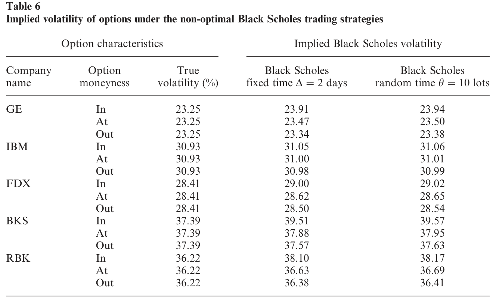
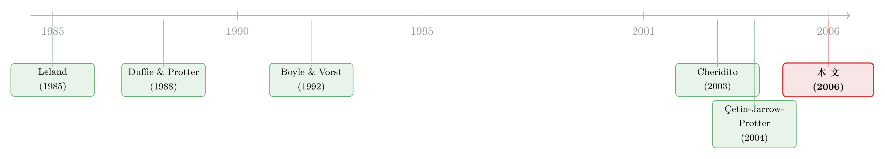

买高卖低的那道楔子：当 Black-Scholes 撞上一条会动的供给曲线
本文读的是 Çetin, Jarrow, Protter & Warachka (2006, Review of Financial Studies)：把 Black-Scholes 经济体里「想买多少就能按一个价买多少」的假设拆掉，换成一条随成交量倾斜的「供给曲线」之后，作者证明了一个微妙的结论——理论上，连续而有限变差的交易可以让流动性成本归零，于是期权的价值仍等于经典 BS 值；可一旦你被迫离散地交易（两笔交易之间必须隔一段时间），流动性成本就再也不会消失，哪怕标的股票流动性极好。换句话说，每一份期权里，都内嵌着一笔躲不掉的流动性账。用 TAQ 数据对五只 NYSE 股票的估计证实：供给曲线确实向上倾斜，而这笔账随对冲规模二次方地膨胀。
1 引言：一个被悄悄藏起来的假设
学过期权定价的人，对 Black-Scholes-Merton 公式（下称 BS 公式）大概都不陌生。它优雅得近乎傲慢：只要给我波动率、无风险利率、行权价和到期日，我就能给你算出唯一一个「公允」的期权价格，而且还附赠一个完美的对冲方案——持有 \(N(d_1)\) 份股票，连续地、随股价的每一次抖动而调整。理论上，这个动态对冲组合能把期权的风险一丝不漏地复制掉。
但请注意，这套魔法依赖一个几乎从不被人念出声来的假设：你可以在任何时刻、以同一个价格、买卖任意数量的股票。市场是无限深、无限滑的一面镜子，你扔进去多大的单子，价格都纹丝不动。
可任何真正下过单的人都知道，这不是真的。你想买，价格就往上抬；你想卖，价格就往下掉；而且你单子越大，这道偏移就越狠。市场微观结构（market microstructure）文献几十年来反复确认的一个事实就是：成交价是成交量的函数。买在高处、卖在低处，是市场对流动性收取的「过路费」。
于是一个自然的问题浮出水面：如果连「以一个价格成交」这个地基都松动了，那么建在它之上的 BS 公式，还站得住吗？对冲一份期权，到底要为流动性额外付出多少？这，就是本文要回答的问题。
2 核心张力：先来一个反直觉的好消息
作者的出发点，是他们自己早先那篇 Çetin, Jarrow & Protter (2004) 在 Finance and Stochastics 上奠定的框架。这个框架的关键，是把「流动性」具体化成一条随机供给曲线（stochastic supply curve）：用 \(S(t,x)\) 表示在时刻 \(t\)、当你下一张规模为 \(x\) 的单子时，每股成交的价格。\(x>0\) 是买，\(x<0\) 是卖，\(x=0\) 是那个不存在的、教科书里的「边际价」\(S(t,0)\)。供给曲线向上倾斜——买得越多，单价越高——而且每成交一次，下一笔交易面对的曲线又会随机刷新一次。
在这个设定下，作者先抛出了一个相当反直觉的结论。
首先，他们问：在最一般的情形里，如果允许你连续地交易、且交易策略是有限变差（finite variation）的，流动性成本会是多少？答案是——零。
这听上去几乎像个悖论。供给曲线明明在向你收费，怎么费用会是零？直觉在于：流动性成本的「连续」那一块，正比于你持仓的二次变差（quadratic variation）；而一个有限变差的连续过程，二次变差恰好为零（一条「光滑」地移动的持仓曲线，不会积累任何二次变差）。再加一个技巧——让初始持仓从 0 出发，用一条连续、有限变差的路径「悄悄地」逼近你想要的头寸——连建仓那一下的冲击都能抹掉。
接着，这个零成本的结论顺势推出两件大事：第一，既然流动性成本可以被规避，那么衍生品的价值就仍然等于经典理论里那个市场完全流动的价格；第二，期权不会因为标的不流动而产生买卖价差（bid-ask spread）。市场是「近似完备（approximately complete）」的——任何或有索取权都能被这样的策略任意逼近。
读到这里你可能会想：那这篇文章是不是要论证「流动性根本不重要」？
恰恰相反。
3 反转：你没法连续地交易
但真正关键的一步在于——作者紧接着指出，上面那个美好结论的前提，是「连续地交易、且每次都能交易任意小的数量」。而这，在现实里根本做不到。
你不可能每一纳秒都去调一次仓。于是作者定义了一类更诚实的策略：离散交易策略（discrete trading strategies）——任意两笔相邻交易之间，必须间隔一段大于某个常数 \(d>0\) 的时间。这个 \(d\) 看似不起眼，却是整篇文章的命门所在。它的思想可以追溯到 Cheridito (2003) 在分数布朗运动里对交易频率的限制。
于是反转出现了：一旦交易必须离散，那条「光滑逼近」的魔法路径就再也走不出来了。持仓不可避免地带上了跳跃，二次变差不再为零，流动性成本随之无法收敛到零——哪怕标的股票流动性极好。更要命的是，市场也不再是近似完备的：复制一份期权的成本，开始依赖于你选哪条对冲路径。
这一下，结论彻底翻转：
在离散交易的现实里，期权的买卖价差确实部分来自标的资产的不流动，而且还取决于你要对冲多少份期权。流动性，不再是可以被聪明策略抹掉的幻象，而是嵌进每一份期权骨子里的一笔账。
值得一提的是，作者特意把自己的框架和交易成本（transaction costs）文献（Leland, 1985；Boyle & Vorst, 1992；Edirisinghe, Naik & Uppal, 1993）划清了界限。交易成本是外生贴上去的一道「税」，而这里的流动性风险是内生于交易过程的：供给曲线在原点处可微，意味着边际交易的成本平滑趋于零，这和买卖价差那种「一上来就有个固定跳口」的结构本质不同。
4 模型：把流动性写进随机微分方程
既然这是一篇有完整理论模型的文章，我们就把最关键的几步推导显式地摆出来。
第一步，写下经济体。 扩展的 Black-Scholes 经济体假设供给曲线取一个指数形式：
$$S(t,x) = e^{\alpha x}\,S(t,0),\qquad \alpha>0$$
其中那个不可观测的边际价 \(S(t,0)\) 仍然是一只老老实实的几何布朗运动（geometric Brownian motion）：
$$S(t,0)\equiv s_t = s_0\, e^{\mu t + \sigma W_t}$$
\(\alpha\) 就是整篇文章的主角——流动性参数。\(\alpha=0\) 时供给曲线变成一条水平线，世界退回经典的 BS 经济体；\(\alpha\) 越大，曲线越陡，市场越不流动。指数形式只是为了简洁，作者强调它「容易推广」。
第二步，给出流动性成本。 一个自财（self-financing）交易策略 \((X_t, Y_t, \tau)\) 的流动性成本 \(L_t\)，被分解成两块：
这个分解是全文的灵魂。第一项管「跳」，第二项管「磨」。前面那个反直觉的零成本结论，本质上就是：有限变差的连续策略让第二项 \([X,X]^c=0\)，从零起步的光滑逼近又让第一项消失——两项同时归零。
第三步，看看经典 BS 对冲会发生什么。 在这个经济体里，欧式看涨期权（European call）的价值仍是标准的 BS 形式：
$$E^Q[C_T] = s_0\,N(h_0) - K e^{-rT}\,N\!\big(h_0-\sigma\sqrt{T}\big)$$
其中
$$h_t \equiv \frac{\log(s_t/K)+r(T-t)}{\sigma\sqrt{T-t}} + \frac{\sigma\sqrt{T-t}}{2}$$
注意：BS 公式本身依然成立，期权价值没变。 但问题出在对冲上——标准的 BS 对冲策略是 \(X_t=N(h_t)\)，它连续，却不是有限变差的（\(N(h_t)\) 随布朗运动不停抖动，二次变差非零）。于是代入上面的成本公式，第二项不再为零，BS 对冲会产生一笔严格为正的流动性成本：
$$L_T = X_0\big(S(0,X_0)-S(0,0)\big) + \int_0^T \frac{\alpha\,\big(N'(h_u)\big)^2\, s_u}{T-u}\,du$$
直觉很清楚：BS 对冲要你时时刻刻跟着 \(N(h_t)\) 抖，抖得越频繁、波动率敏感度 \(N'(h_u)\) 越大、越临近到期（分母 \(T-u\to 0\)），磨损就越凶。这正是为什么实务中没人真的去连续对冲。
第四步，那条理想的「平滑 BS 对冲」。 作者构造了一条连续且有限变差的策略 \(X^n_t\)（论文式 10），它本质上是把 BS 对冲做了一次「时间平滑」——持仓不再跟着每一次抖动跳，而是去追一个 BS delta 的移动平均，临到期前再一次性平仓。这条策略既能在 \(L^2\) 意义下逼近期权的真实payoff，流动性成本又恰好为零。它是理论上的「完美解」，可惜——它要求你连续交易，现实里造不出来。
第五步，离散世界里的成本，是二次的。 这是全文最有杀伤力的一个比较静态。对离散策略里的每一次成交，把指数供给曲线做一阶 Taylor 展开：
$$\big(x_{\tau_{j+1}}-x_{\tau_j}\big)\,S(\tau_j,0)\Big[\exp\!\big(\alpha(x_{\tau_{j+1}}-x_{\tau_j})\big)-1\Big] \;\approx\; \alpha\,S(\tau_j,0)\,\big(x_{\tau_{j+1}}-x_{\tau_j}\big)^2$$
看右边那个平方。它说明：流动性成本随交易规模——也就是随你要对冲的期权份数——二次方地增长，而期权价格本身只是线性增长。这个「二次 vs 线性」的剪刀差，意味着大额对冲者面对的单位流动性成本会迅速恶化，也为后文「如何从期权的多空头寸失衡里反推出期权价差」埋下伏笔。顺带一提，式子里 \(x\) 的正负号完全消失了——买和卖是对称的，这正是「买高卖低」那道楔子的几何对称性。
5 识别与估计：怎么把 \(\alpha\) 从数据里捞出来
理论再漂亮，也得有人去量一量那条供给曲线到底有多陡。这正是本文实证部分干的事。
难点在于：边际价 \(S(t,0)\) 根本不可观测——你在市场上看到的永远是带着冲击的成交价。作者的破解办法很巧：取两笔相邻的日内成交，相除取对数，那个看不见的 \(S(t,0)\) 就被消掉了，留下一个干净的回归方程（论文式 15）：
$$\ln\!\left[\frac{S(\tau_{i+1},x_{\tau_{i+1}})}{S(\tau_i,x_{\tau_i})}\right] = \alpha\big(x_{\tau_{i+1}}-x_{\tau_i}\big) + \mu(\tau_{i+1}-\tau_i) + \sigma\,\varepsilon_{\tau_{i+1},\tau_i}$$
左边是两笔成交之间的百分比收益；当 \(\alpha\equiv 0\) 时，它就退化成一只普通的几何布朗运动。\(\alpha\) 的系数，就是供给曲线斜率的估计。作者特意用成交价而非买卖报价（quotes）来估计，理由有三：报价可能高估流动性成本（成交常发生在价差内部）、报价只是对特定成交量的承诺、报价对冷门股可能是「过期」的。
- 数据：
TAQ数据库，五家在 NYSE 上市、且在 CBOE 有期权的知名公司——通用电气（GE）、IBM、联邦快递（FDX）、锐步（RBK）、巴诺书店（BKS）。 - 样本期：1995 年 1 月 3 日到 1998 年 12 月 31 日，共
1011个交易日。 - 观测单位：每一对相邻的日内成交。每家公司、每个交易日跑一个回归，于是每只股票有约
1011个逐日的 \(\alpha\) 估计。 - 关键过滤：用 Lee & Ready (1991) 的算法给每笔成交标上买/卖方向；只保留成交规模（绝对值）不超过
10手（lots）的交易——因为对冲期权本就是小批量、高频次的活儿。
为什么用「逐日回归」而不是把四年数据堆在一起跑一个大回归？因为供给曲线本身是随机、时变的——\(\alpha\) 不是一个常数，它会随市场状态漂移。逐日估计才能把这条时间序列勾出来。
6 主要结果：曲线确实在向上倾斜，而且越不流动越陡
第一组结果，干净利落。在五家公司、上千个交易日的回归里，\(\alpha\) 的估计几乎总是在 5% 水平上显著为正：GE 有 99.99% 的交易日显著、IBM 98.71%、FDX 96.04%、BKS 95.15%。相比之下，漂移项 \(\mu\) 几乎从不显著（GE 仅 24 天、IBM 仅 31 天）。这说明：日内股价的变动，绝大部分是订单流（order flow）推动的，而那条向上倾斜的供给曲线，是实打实存在的。
第二组结果，印证了直觉里的「流动性排序」。\(\alpha\) 的中位数（单位 $10^{-4}\(，按手计）：IBM `0.17`、GE `0.44`、FDX `0.53`、BKS `1.18`。也就是说，**最流动的 IBM、GE，供给曲线最平；最不流动的小盘股 BKS，曲线最陡**——巴诺书店的 \)\alpha$ 几乎是 IBM 的七倍。一手交易在 BKS 上掀起的价格涟漪，远大于在 IBM 上。这和我们对这些股票流动性的常识完全吻合。
还有一个微妙的发现：\(\alpha\) 和边际股价反向变动。以 GE 为例，样本期内它股价一路上涨，\(\alpha\) 却在下降。作者给的直觉很接地气：做市商似乎在追求每手交易一笔固定的「美元费用」——股价越高，要达到同样的美元收费，斜率 \(\alpha\) 就越小。所以流动性成本是 \(\alpha\) 和股价 \(S(\cdot,0)\) 两者的共同函数。
最后，回到对冲。作者用动态规划解出了超复制（super-replicate）期权 payoff 的最优离散对冲策略，并把它和两种实务中真在用的非最优 BS 对冲（在随机时点、和在固定时点执行 BS delta）做对比。不出所料，实证确认了 BS 对冲的非最优性；而真正值得玩味的，是作者把这些对冲策略付出的流动性成本，翻译成了期权的隐含波动率（implied volatility）——如表 6 所示，两种非最优 BS 对冲都隐含出一道可观的波动率楔子。这意味着：你在期权市场上看到的那部分「波动率溢价」，其中一块根本不是对波动的补偿，而是对标的不流动的补偿。

Table 6: reports implied volatilities for the two non-optimal Black from
而最重要的结论是：即便切换到最优对冲策略，流动性成本依然构成期权价格里一个显著的组成部分。 它压不到零。这就是「每一份期权里都内嵌着一笔流动性账」的实证落点。
（关于「同一个 BS 框架里还藏着别的被忽略的东西」，可参见《一道方程，几个价格——Black-Scholes 方法里被忽略的「泡沫」》；而把「成交价从成交量里剥离出来」这一估计思路，公司债市场里也有平行的尝试，见《把「成交价」从「成交量」里解放出来——重新丈量公司债的流动性》。）
7 文献脉络
这条研究线，可以从两股源流讲起。
一股，是「交易成本下的期权对冲」。 Leland (1985) 最早把比例交易成本塞进 BS 框架，发现连续对冲在有成本时会发散，于是要靠离散对冲加一个修正的波动率来近似；Boyle & Vorst (1992) 把它进一步做成离散时间下的精确复制问题；Edirisinghe, Naik & Uppal (1993) 则在交易成本加交易限制下求最优复制。这些工作的共性，是把摩擦当成一道外生贴上去的税。
另一股，是随机分析的收敛基础与「大交易者」的反馈效应。 Duffie & Protter (1988) 奠定了从离散到连续时间金融、金融收益过程弱收敛的理论；Frey (1998)、Platen & Schweizer (1998)、Schonbucher & Wilmott (2000) 则研究当对冲需求本身会反过来推动股价时（feedback effects），会发生什么。
真正的转折点，是 Çetin, Jarrow & Protter (2004)。 他们第一次用一条「随机供给曲线」把流动性风险内生化进无套利定价理论，给出了带流动性的资产定价基本定理。本文正是站在这块地基上，再借 Cheridito (2003) 关于「离散交易」的处理，把这套抽象理论一路推到了可估计、可对冲、可校准的扩展 BS 经济体，并第一次拿真实的 TAQ 数据量出了那条供给曲线。

评论与延伸（Q&A + 研究方向）
(a) 几个可能的疑问
Q：BS 公式既然还成立，那这篇文章到底改变了什么？
改变的是对冲，不是定价公式。期权的「公允价值」仍是经典 BS 值，但能达到这个值的那条理想对冲路径（连续、有限变差）在现实里造不出来。你实际能用的离散对冲，会付出一笔无法消除的流动性成本——于是期权出现了一个内生的买卖价差。价格没变，但「复制它要花多少钱」变了。
Q：流动性风险和交易成本，到底有什么本质区别？
交易成本是外生的、对每笔交易固定收取的税，而且通常在原点处不可微（买卖价差是个跳口）。本文的流动性风险是内生于成交过程的：供给曲线在原点平滑可微，边际交易的成本连续趋于零，所以连续有限变差策略能把成本规避掉——这在交易成本模型里办不到。Çetin (2003) 的博士论文专门讨论了这个区别。
Q：那个「连续交易让流动性成本归零」的结论，是不是一个纯数学的人造结果？
很大程度上是。它依赖两个现实里不可能的条件：交易任意小的数量、且时间上连续。作者自己也把它当成「靶子」——立起来正是为了用离散约束 \(d>0\) 把它打掉。真正的经济学内容，恰恰在反转之后：只要承认你不能连续交易，流动性成本就必然为正。
Q：用逐日回归估 \(\alpha\)，标准误还可信吗？
作者很诚实地提示：因为估计是逐日做的，那些标准误只是单日的拟合优度度量，不能跨日做统计推断。\(\alpha\) 的估计也确实「有点噪」，所以他们另做了几种供给曲线设定的稳健性检验。把 \(\alpha\) 当成一条时变的随机过程来看，比当成一个可精确推断的常数更贴近文章的精神。
Q：为什么流动性成本随期权份数是二次的，而价格是线性的？这有什么实际含义？
因为成交规模翻倍，价格冲击也翻倍，二者相乘，成本就是平方关系（式 16）；而期权价格只随份数线性叠加。含义是：小额对冲者几乎感觉不到流动性，大额对冲者却会被迅速拉高的单位成本咬住。这也解释了为什么作者能从期权多空头寸的失衡程度，反推出期权应有的买卖价差。
Q：只用五只股票、四年数据，外部有效性够吗？
这是合理的担忧。五只股票是为「示意」而精选的流动性横截面，谈不上代表性样本。不过 Blais & Protter (2005) 用订单簿数据进一步支持了流动股票上这条线性供给曲线的设定，算是给本文的外推性补了一块砖。
(b) 几个可能的研究问题与提案
1. 把这套框架搬到公司债市场。
【经济故事】公司债是出了名的 OTC、低频、买高卖低极其严重的市场，比股票更适合「供给曲线」这个隐喻。期权式的信用衍生品（如 CDS 期权）的对冲成本，理应深受标的债券不流动的拖累。 【可行性】中。数据可用
TRACE逐笔成交反推债券层面的 \(\alpha\)，但债券成交太稀疏，「相邻两笔成交」之间可能隔了好几天，式 15 的识别会被时变性严重污染——需要更结构化的状态空间设定。
2. \(\alpha\) 的时变性能预测什么？
【经济故事】本文把 \(\alpha\) 当成对冲成本的输入，但 \(\alpha\) 自己是一条会漂移的随机过程。一个自然的问题是：\(\alpha\) 的飙升是否领先于流动性危机？它能不能成为一个前瞻性的市场压力指标？ 【可行性】高。逐日 \(\alpha\) 序列直接可得，配合 VIX、TED 利差等做预测回归即可，识别上的主要挑战是把 \(\alpha\) 的内生成分与系统性流动性冲击分开。
3. 外资持有人与供给曲线的陡峭程度。
【经济故事】不同类型的持有人，给市场提供流动性的意愿差别很大。如果某只股票/债券被「黏性」的外资长期投资者大量持有，可流通的浮筹更少，供给曲线是否更陡（\(\alpha\) 更大）？ 【可行性】中。需要把持有人结构（如 13F、各国托管数据）匹配到逐笔成交估出的 \(\alpha\)，识别上可借助指数纳入等外生冲击作为持有人结构的工具变量。
4. 把隐含波动率里的「流动性楔子」拆出来。
【经济故事】本文已把对冲的流动性成本翻译成隐含波动率。能否反过来，用一个跨标的、跨期限的面板，把市场隐含波动率分解成「真波动率 + 流动性楔子」两块，看后者占多少？ 【可行性】中。需要期权面板 + 标的逐笔成交估的 \(\alpha\)，识别的关键是找到只动流动性、不动基本面波动的外生事件（如做市商宕机、Tick size 改革）。
我的判断
这篇文章的贡献，在于它把一个抽象到近乎玄学的随机分析框架（Çetin-Jarrow-Protter 2004），一路落地成了可估计、可对冲、可校准的东西，并且在落地的过程中翻出了一个真正深刻的反转：流动性成本的「可不可避免」，完全系于「你能不能连续交易」这一根弦上。把 \(d>0\) 这个看似技术性的约束抬到舞台中央，是全文最聪明的一笔——它让「期权内含流动性价差」从一句口号，变成了一个有数学必然性的结论。
对识别，我有两点保留。其一，逐日回归的标准误只在单日内有效，\(\alpha\) 估计本身也偏噪，作者很坦诚地承认了这点，但这也意味着任何基于 \(\alpha\) 的下游推断都得小心。其二，把成交方向交给 Lee & Ready 算法去标，本身会引入分类误差，而这个误差恰恰可能和 \(\alpha\) 的估计相关——成交越密集、价格波动越大的时刻，定向越容易出错，\(\alpha\) 也越容易被高估。指数供给曲线的设定虽便于推导，但作者自己在脚注里也提到，对不流动股票它更像分段线性、带跳口的形状，这与「原点可微」的核心假设存在张力。
后续我最想看到的，是两件事。一是把这套「供给曲线 + 离散对冲成本」直接对标到市场上观测到的期权买卖价差，做一个真正的横截面定价检验：模型预测的流动性楔子，能解释实际期权价差的几成？二是把 \(\alpha\) 当成一个会传染、会在危机里同步飙升的系统性变量来研究——毕竟，当所有人都想在同一时刻卖出、对冲同一个方向时，那条供给曲线会陡到什么程度，才是流动性风险最危险的一面。
参考文献
Boyle, P., and T. Vorst (1992). Option Replication in Discrete Time with Transaction Costs. Journal of Finance 47(1), 271–293.
Çetin, U., R. Jarrow, and P. Protter (2004). Liquidity Risk and Arbitrage Pricing Theory. Finance and Stochastics 8, 311–341.
Çetin, U., R. Jarrow, P. Protter, and M. Warachka (2006). Pricing Options in an Extended Black Scholes Economy with Illiquidity: Theory and Empirical Evidence. Review of Financial Studies 19(2), 493–529.
Cheridito, P. (2003). Arbitrage in Fractional Brownian Motion Models. Finance and Stochastics 7, 417–434.
Duffie, D., and P. Protter (1988). From Discrete to Continuous Time Finance: Weak Convergence of the Financial Gain Process. Mathematical Finance 2, 1–16.
Edirisinghe, C., V. Naik, and R. Uppal (1993). Optimal Replication of Options with Transactions Costs and Trading Restrictions. Journal of Financial and Quantitative Analysis 28, 117–138.
Lee, C. M. C., and M. J. Ready (1991). Inferring Trade Direction from Intraday Data. Journal of Finance 46, 733–746.
Leland, H. (1985). Option Pricing and Replication with Transaction Costs. Journal of Finance 40, 1283–1301.